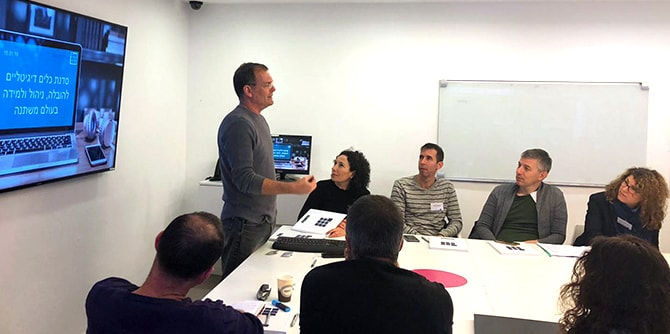

On January 15, 2019, the Mandel Graduate Unit held a workshop on "Digital Tools for Leadership, Management, and Learning in a Changing World" at the Center for Educational Technology (CET), in partnership with two graduates of the Mandel School for Educational Leadership who currently hold senior positions there: Guy Levi, a graduate of Cohort 2 and chief innovation officer at CET; and Gidi Yehoshua, a graduate of Cohort 22, who is the director of CET’s video and media department.
The event was opened by
Sharona Bar-Nes, senior staff member at the Mandel Graduate Unit, who spoke about the Unit’s model of partnership with Mandel graduates, which is one of the most important foundations of its work. Guy Levi then presented the new ecosystem of learning in a changing world, and spoke about the paradigmatic change it requires: moving from a hierarchical system, which characterized the 20th century, to a networked system that is suitable for the 21st century.

Shir Boim Shwartz, the leader of CET’s instructional design team and its director of innovation, presented theories of learning for the digital age, and provided an introduction to the world of “ed-tech.” Next, Gidi Yehoshua spoke about the revolution in education communications and the new global teachers who are active on various digital platforms. And Ronit Mesika, director of online professional development at CET, presented an innovative model for professional development based on competencies.
The presentations were followed by a workshop by CET staff in which the graduates split into groups and practiced “design thinking” – learning that is based on competency in organizations and the use of digital tools for developing competencies. To end the event,
Dr. Granit Almog-Bareket, director of the Mandel Graduate Unit, facilitated a reflection and feedback session.
{kind=link}